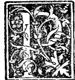
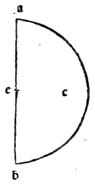

CHAPTER LVI¶
On the Spherical Body and How It Is Formed (Plates XLI–XLII).

Definition and Generation of the Sphere ([XI.Def.14])
The sphere is a solid figure described by the revolution of a semicircle when its diameter remains fixed and the semicircle is turned completely around until it returns to the place from which it began to move; and the center of the sphere is the same as the center of the semicircle ([XI.Def.14]).
The sphere has been defined in various ways by many authors—above all by the worthy mathematician Dionysius (and Theodosius in his Sphaerica, who defines it as a solid body bounded by a single surface, within which there is a point from which all straight lines drawn to the surface are equal). Yet our author Euclid, with supreme brevity, describes its genetic formation in the eleventh book in a definition adopted by all posterity (and depicted in perspective in Plate XLI (Sperico Solido) and Plate XLII (Sperico Vacuo)):
Construction of the Sphere by Revolution ([XI.Def.14])
Let \(adb\) be a semicircle constructed upon any straight line \(ab\) as diameter, with center \(c\) and curved circumference \(adb\) (see the marginal diagrams
0049.g1.pngand0049.g2.pngon Folio 0049).Hold the diameter \(ab\) fixed like an immovable axle (axe), and revolve the plane semicircle \(adb\) completely around \(ab\)—starting from point \(d\), descending through the lower half, and rising through the upper half (or conversely) until the arc \(adb\) returns to the exact place from which it began to move.
The round solid body traced out (el vestigio) by the plane semicircle in its complete revolution is called a spherical body or sphere (corpo sperico / spera), and its center is the same point \(c\) which was the center of the semicircle.
And to grasp this properly in the imagination, conceive of the semicircle as a flat material half-trencher (vn mezzo taglieri materiale): for if only the curved line of the arc revolved without the plane surface inside it, it would leave only a hollow shell without solid body, since a line has neither breadth nor depth ([I.Def.2]).
Marginal Woodcut Diagrams (Paganini 1509)¶

Folio 0049 Diagram 2¶